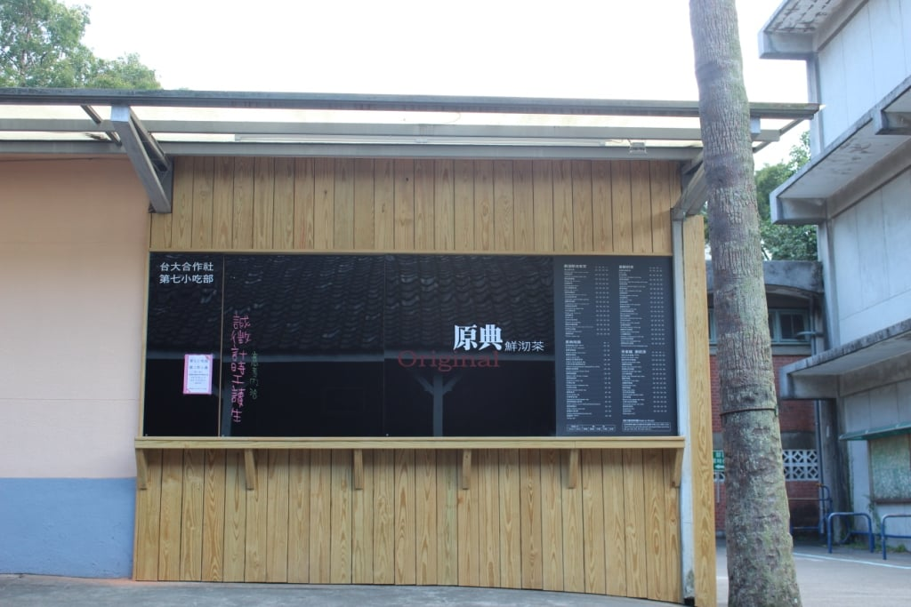
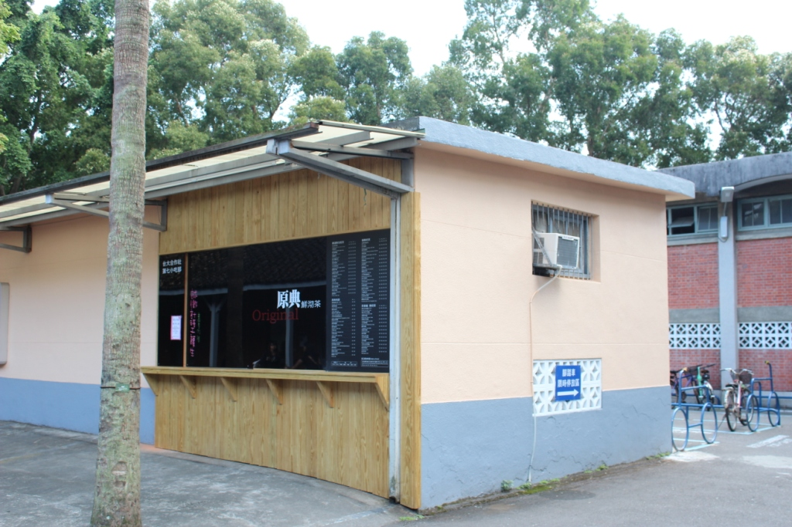
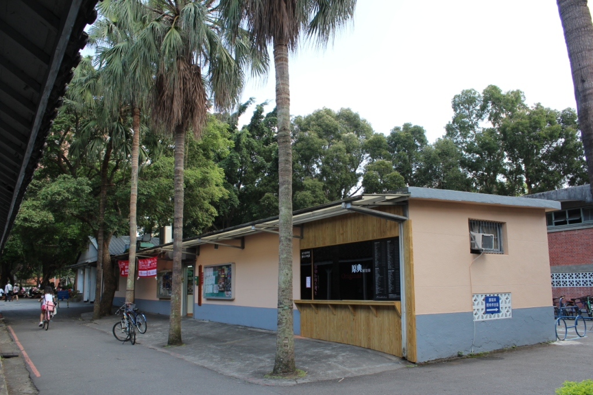

第七小吃部
- 本校營業地點位置 小小福旁邊
- 餐飲業者名稱 原典鮮沏茶
- 公司名稱 綠蜻蜓企業社
- 營業時間及休息日
- 星期一~五0800~2000，星期六1200~1630
- 聯絡電話02-83695755
- 營業項目、型態 各項鮮泡茶冷熱飲販售
- 業者簡介
- 市面茶飲店營運模式為在後場將茶葉用滾水泡製成茶湯，再以各不同茶種用茶桶分裝後送往前場再以消費者需求加工賣於顧客，這種未公開的操作會有讓消費者對茶湯的沖泡過程和衛生產有疑慮，且非常不迎合時下消費大眾對衛生、健康為主的市場。
- 原典鮮沏茶，是以專利高壓沖茶機泡製茶品，捨棄煮桶茶再分裝的普遍做法，創新的改良咖啡機來煮茶，透過『現點即泡』高壓現場沖泡的模式針對上訴缺點皆可輕易解決，並提供消費者現泡茶獨有的自然回甘風味，強調自然、零負擔的健康訴求。且由於高溫高壓現泡，達成讓茶分子更細，以及身體吸收更無負擔的雙贏局面。
餐廳業者參考照片
- 
- 
- 